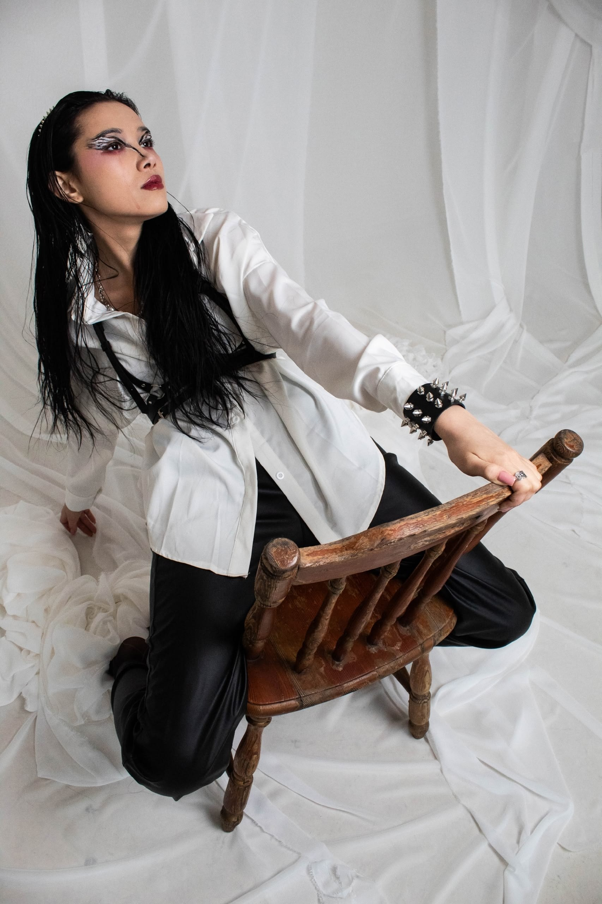

ПОРТРЕТЫ · ИСТОРИИ · МГНОВЕНИЯ
Искусство
быть собой.
Святослав Чегус.
Сохраняю то, что чувствуешь.

ЛИНИИ И ХАРАКТЕР / 2026Избранное / 11 кадров
Личное. Живое. Настоящее.
Двое в городе
01 / История о двоихЛинии и характер
02 / Творческий портретВне правил
03 / Творческий портретСквозь
04 / ЭкспериментСвой ритм
05 / ПортретЧУВСТВО ВАЖНЕЕ ПОЗЫ
Самое красивое —
между мгновениями.
Навстречу свету
06 / История о двоихРядом
07 / История о двоихЗимний свет
08 / ПортретТепло в деталях
09 / ДеталиПосле игры
10 / НаблюденияТихая гавань
11 / НаблюденияЗА КАМЕРОЙ / SCHEG
Святослав Чегус.
Внимание к настоящему.
Снимаю людей, их близость и характер. Люблю живой свет, неожиданные ракурсы и моменты, которые невозможно повторить. На съёмке можно быть разным — спокойным, смелым, немного непривычным. Главное — собой.
Больше фотографий в VK ↗ЕСТЬ ИДЕЯ? ДАВАЙТЕ СНИМЕМ.ПОРТРЕТ / ПАРНАЯ / ТВОРЧЕСКАЯ СЪЁМКА
Ваша история.Наш следующий кадр.
* Instagram — запрещённая в России социальная сеть.